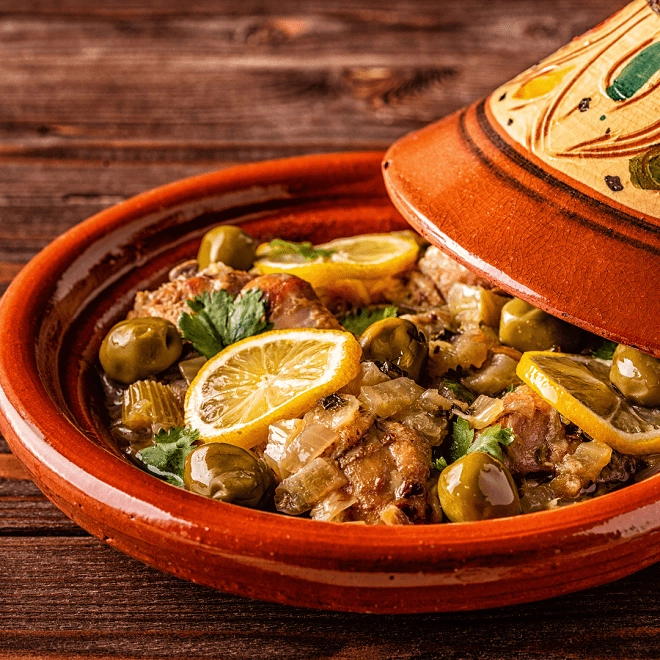

Tajine Poulet
Un plat marocain traditionnel, parfumé aux épices, qui mijote lentement pour un goût inoubliable.
Ingrédients :
- 4 cuisses de poulet
- 2 oignons
- 2 gousses d’ail
- 1 c.à.c de gingembre, curcuma et cannelle
- Olives vertes et citrons confits
- Huile d’olive, sel, poivre
- Coriandre fraîche
Préparation :
- Faire revenir oignons et ail dans l’huile avec les épices.
- Ajouter le poulet, faire dorer quelques minutes.
- Ajouter un peu d’eau, couvrir et laisser mijoter 45 min.
- Ajouter olives et citrons confits en fin de cuisson.
- Servir chaud avec du pain ou de la semoule.
← Retour à l'accueil